Our Veterans
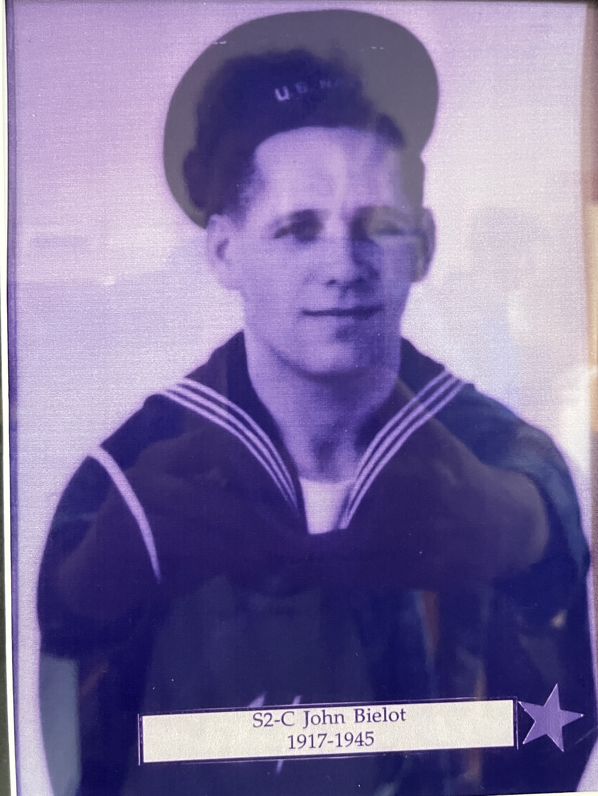
John Bielot
1917 - July 13, 1945
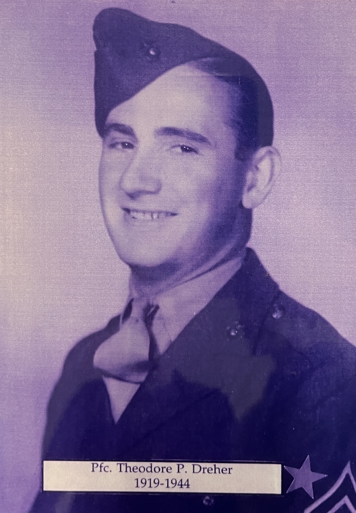
Theodore Dreher
May 28, 1919 - April 1944
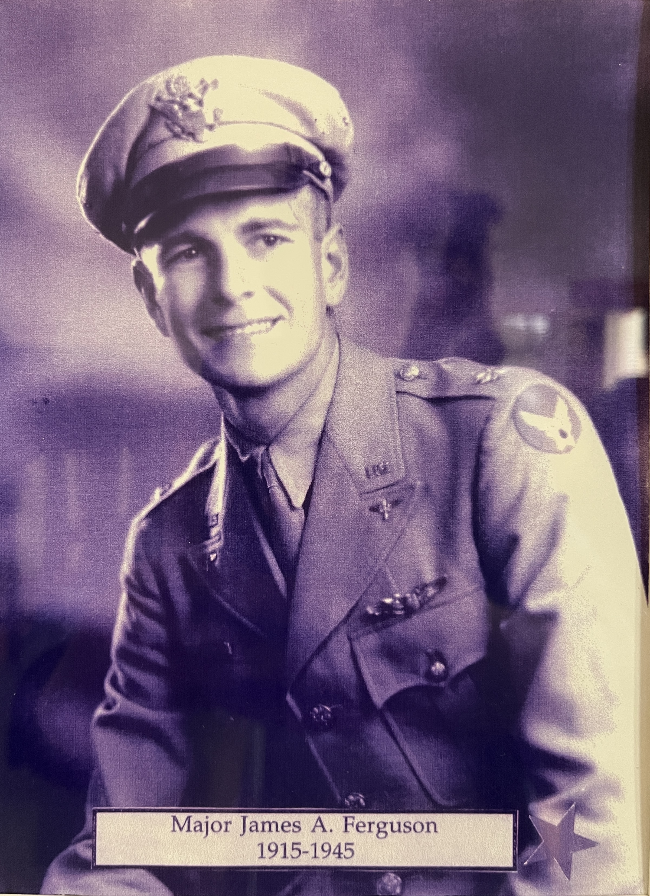
James A. Ferguson
November 15, 1915 - January 5, 1945
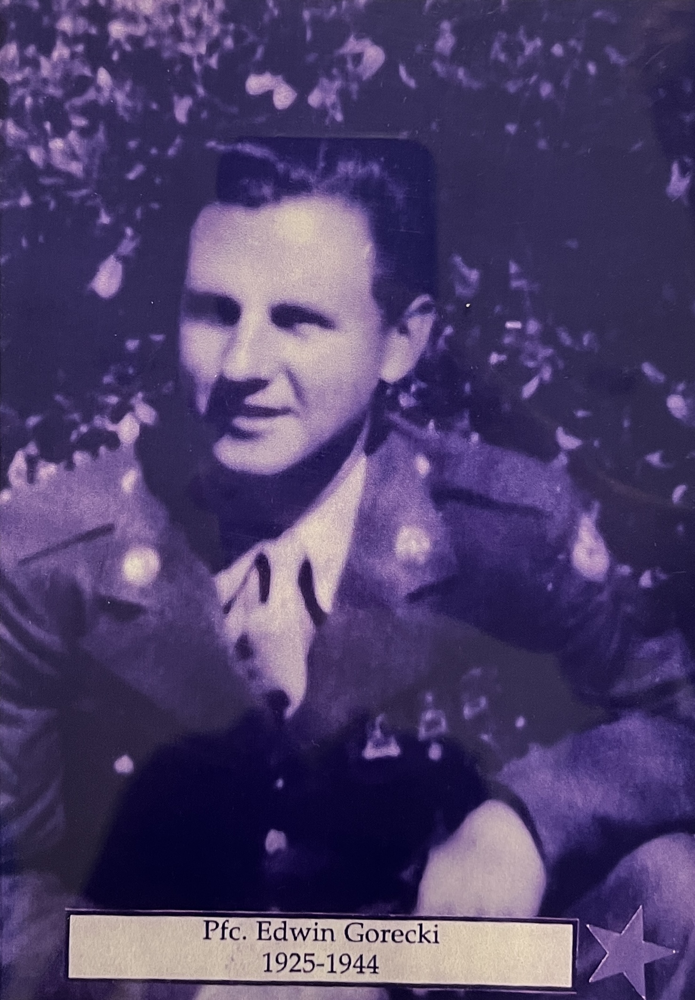
Edwin Gorecki
1925 - 1944
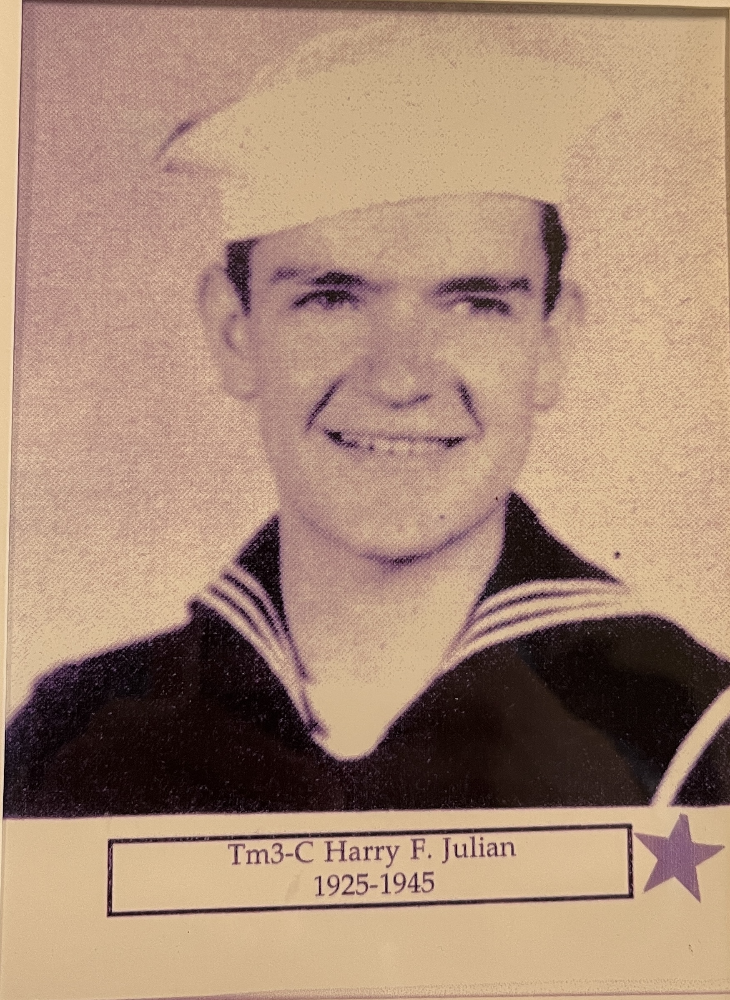
Harry F. Julian
1925 - April 1945
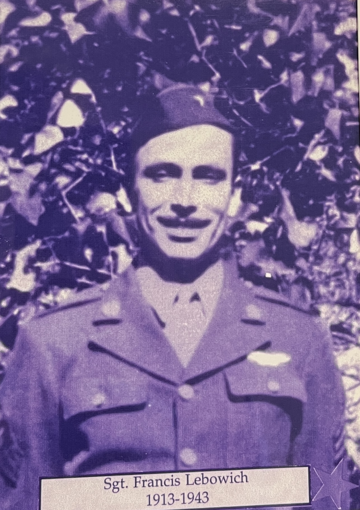
Francis Lebowich
1913 - November 23, 1943
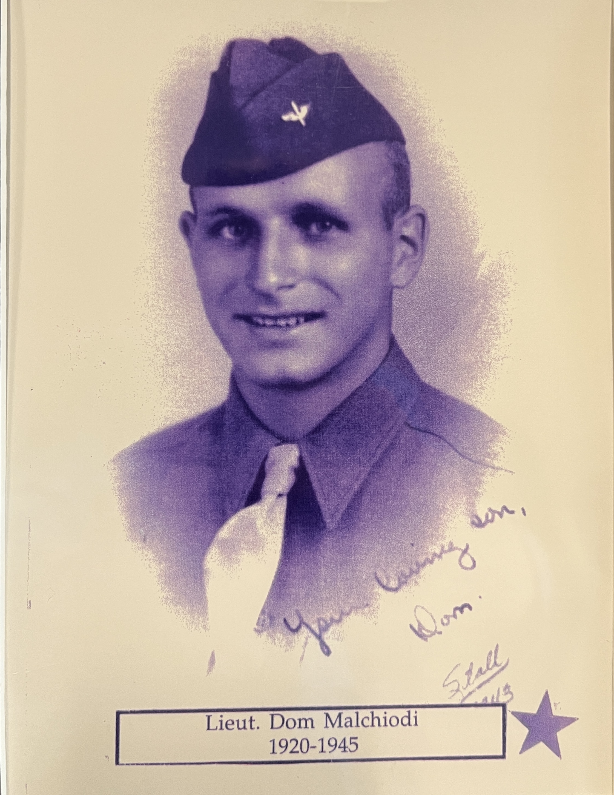
Donald Malchoidi
November 11, 1920 - May 31, 1945
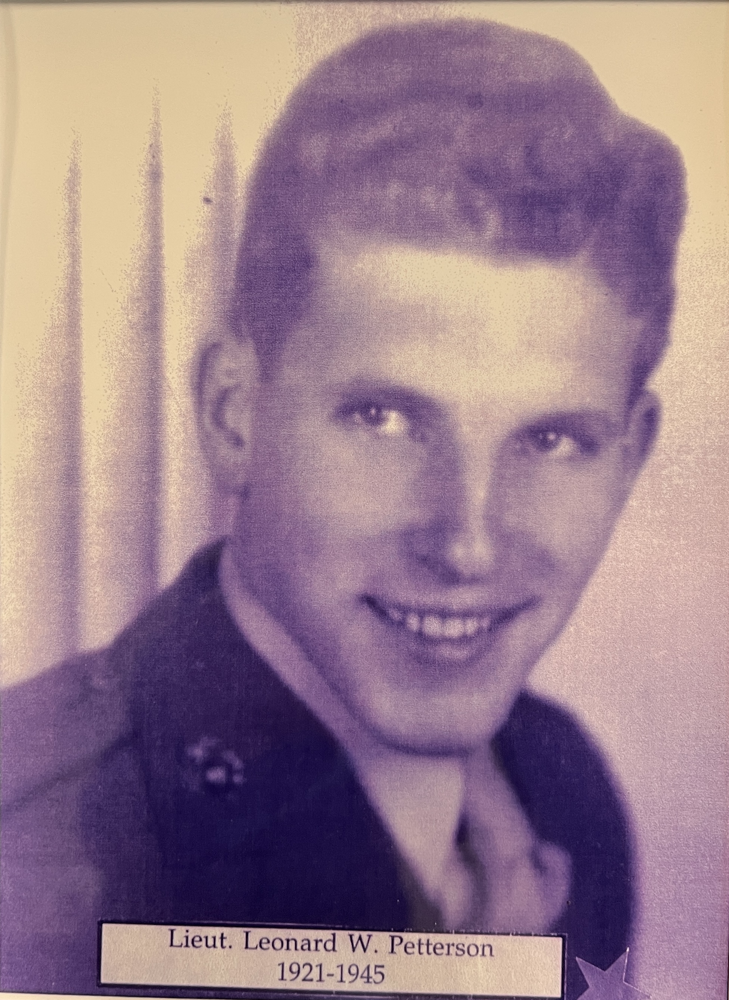
Leonard M. Petterson
January 27, 1921 - June 8, 1945


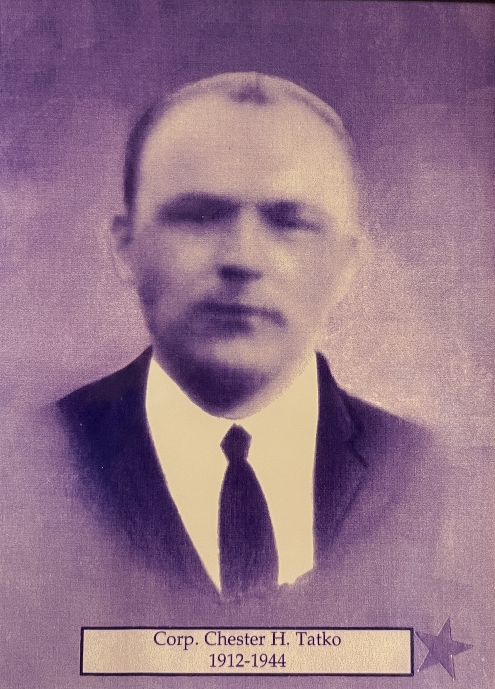
Chester Tatko
1912 - December 2, 1944

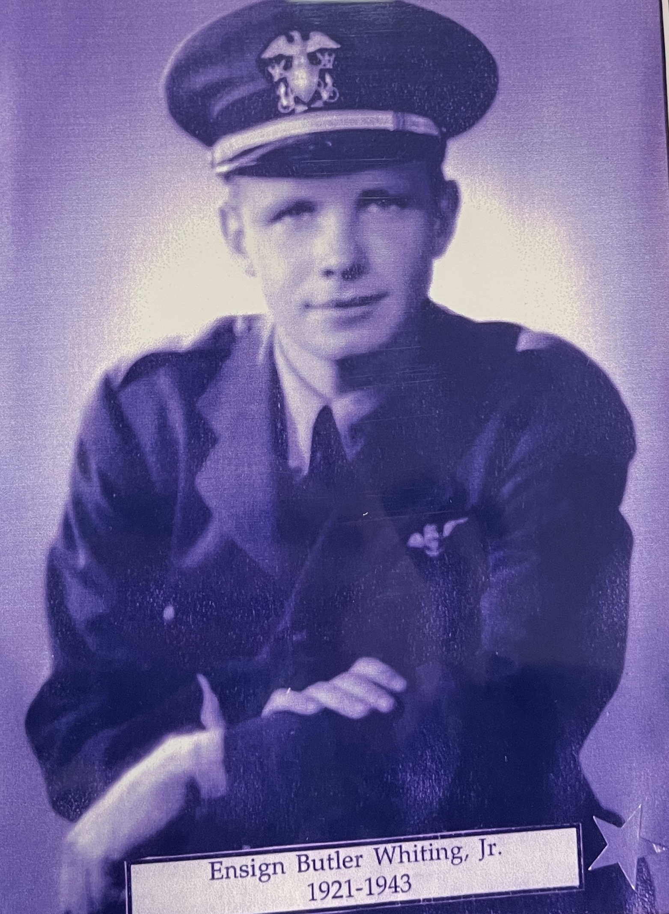
Butler Whitting Jr.
August 3, 1921 - December 23, 1943
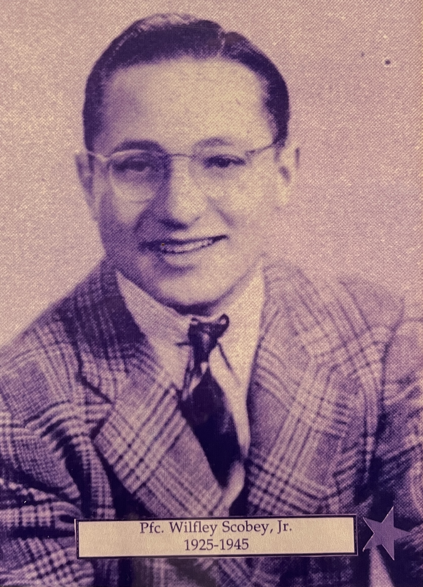
Wilfley Scobey Jr.
August 31, 1925 - September 28, 1945